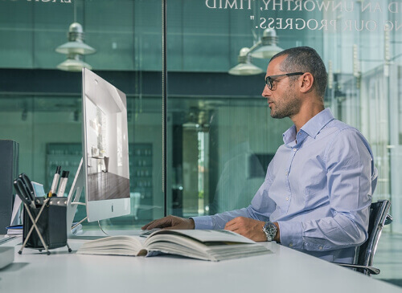

A visão é um dos sentidos mais preciosos que temos
Protegê-la é um dos nossos deveres
Com o passar dos anos, a nossa visão vai perdendo qualidade. Na verdade, e graças à genética, podemos até já nascer com dificuldades, pelo que a prevenção ou a correção de doenças oculares é fundamental.
É nosso dever proteger a visão. Assim, a utilização de lentes solares ou lentes de uso regular torna-se essencial para garantir uma saúde ocular estável contribuindo para uma melhor qualidade de vida. Existe uma grande variedade de lentes oftálmicas e de especificações a considerar ao escolher as lentes dos seus óculos.
Conheça os diferentes tipos de lentes, assim como os tratamentos, as matérias e as tecnologias Shamir.
As lentes Progressivas
A mesma lente com diferentes graduações. A parte superior da lente tem a graduação para visão ao longe, sendo que a parte inferior se destina à visão ao perto. A zona da lente que fica entre estes dois campos ópticos tem graduações que variam progressivamente. Isto permite que o utilizador de lentes progressivas tenha a possibilidade de ver a todas as distâncias - inclusive, as intermédias - com os mesmos óculos.
As lentes Unifocais ou Monofocais
Lentes com apenas uma graduação. Usadas para melhorar a visão ao longe ou ao perto, para uso pemanente ou uso pontual. Uma vez que a potência da lente é a mesma em toda a sua superfície, ajudam a reduzir dificuldades de visão bastante específicas, como a miopia ou a hipermetropia.

As lentes Degressivas
Também conhecidas como lentes ocupacionais, garantem uma excelente funcionalidade visual até 2.20m. De modo a satisfazer as exigências nos diversos ambientes de trabalho, estas lentes são personalizadas a cada pessoa. Ideais para quem tem uma rotina diária em gabinete/escritório que tenham necessidade de ver, simultaneamente, a diferentes distâncias ao perto. Por serem desenvolvidas a pensar nas necessidades de visão ao perto, não são indicadas para conduzir e não substituem lentes progressivas.

Tratamento das lentes
Os tratamentos das lentes, assim como as tecnologias Shamir, são resultado de um trabalho de investigação e desenvolvimento contínuo para encontrar formas inovadoras de melhorar a sua saúde ocular. Os tratamentos não só protegem o olho como melhoram o conforto e a capacidade de visão e ainda preservam a lente de riscos e sujidades. A gama de tratamentos Anti-Reflexo Shamir Glacier™ oferece um conjunto de benefícios adicionais às suas lentes como a proteção 100% UV E-SPF 50+, a proteção contra a luz infra-vermelha, o anti-embaciamento, o acromatismo, a hidrofobia, entre outros. Consulte na sua óptica qual o tratamento mais adequado para as suas lentes.
Matéria das lentes
Matéria fotocromática
As matérias fotocromáticas permitem-nos produzir as lentes com a cor ideal tendo em conta o ambiente, mais escuro ou mais claro. A matéria das Transitions® Signature® VII, consideradas as lentes fotocromáticas número 1 em todo o mundo, adapta a cor da lente de acordo com a luminosidade em cada ambiente: claro dentro de casa e escuro em ambientes exteriores. A matéria das Transitions Xtractive®, lentes ideais para quem passa a maior parte do dia a conduzir, tem a capacidade para tornar a lente o mais escura possível em ambientes exteriores, mesmo atrás do pára-brisas.
Matéria solar polarizada
As matérias solares polarizadas são desenvolvidas à base de uma película polarizadora que orienta toda a luz para um determinado comprimento de onda, anulando o efeito de encandeamento, o efeito refletor e aumentando o contraste. Com um fator de proteção solar E-SPF 50+, o olho fica cinquenta vezes mais protegido dos raios UV.
Matéria de tecnologia Blue Zero™ ou Blue Sun™
As lentes em matéria Shamir Blue Zero™, através de uma tecnologia incorporada na própria matéria da lente, protegem os olhos contra a luz azul nociva emitida pelos ecrãs digitais: TV, computadores ou smartphones. Uma exposição prolongada a estes equipamentos, pode provocar olhos cansados e secos, contraste visual insuficiente e dor de cabeça. Para uma proteção contra a luz azul nociva em ambientes exteriores, desenvolvemos as lentes Shamir Blue Sun™, aplicáveis a lentes solares.
Matéria de alta resistência ao impacto ou de alto índice
As matérias como o Trivex® 1.53 e o 1.59 Policarbonato 1.59 permitem-nos produzir lentes leves, confortáveis, seguras e resistentes, com proteção alargada contra os raios UVA e UVB. São perfeitas para os óculos desportivos e para óculos de criança. Este tipo de matéria resolvem o problema estético associado a lentes de altas graduações.
Tecnologias Shamir
As tecnologias são integradas nas próprias geometrias aquando do fabrico das lentes. Influenciam o desempenho da lente tendo em conta a fisionomia, a armação escolhida e os hábitos oculares e posturais de cada pessoa individualmente.
Como escolher lentes?
A escolha das lentes é influenciada por três importantes variantes, a idade, o estilo de vida e as condições ambientais.

Idade
Assim como a nossa saúde de uma forma global, a saúde da nossa visão é altamente influenciada pela nossa idade. Uma vez que a idade visual é, na maior parte dos casos, a mesma que a idade cronológica, a tendência para as doenças oculares se desenvolverem vai aumentando com o tempo. Deste modo, as lentes que usamos em criança não serão as mesmas que usamos com 50 ou 60 anos.

Estilo de vida
Se passamos um terço do dia a trabalhar, a nossa ocupação profissional é um fator de grande influência nas lentes que usamos. Um outro fator fundamental para a escolha acertada das lentes prende-se com a rotina diária: se passa muito tempo a ler, a ver TV, se prefere fazer desporto ou se utiliza regularmente dispositivos digitais.

Condições ambientais
Passa mais tempo no escritório com luz artificial do que ao ar livre com luz natural? Quais as condições meteorológicas no seu país? Anoitece cedo e os dias de sol são escassos? Passa muito tempo a olhar para ecrãs digitais caracterizados por disseminarem luz azul?